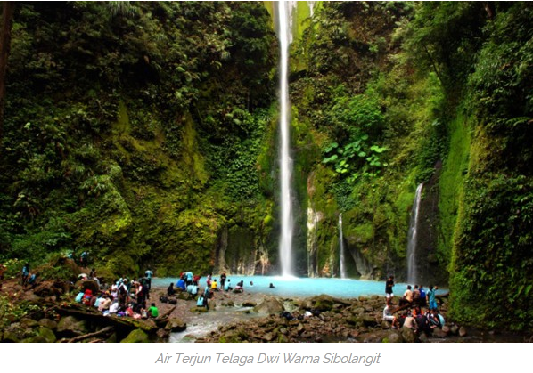
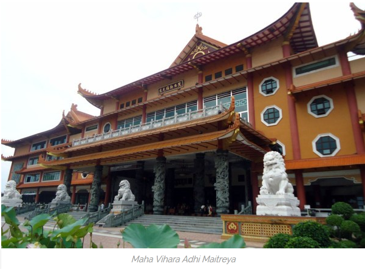
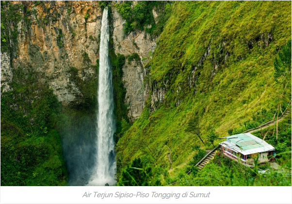
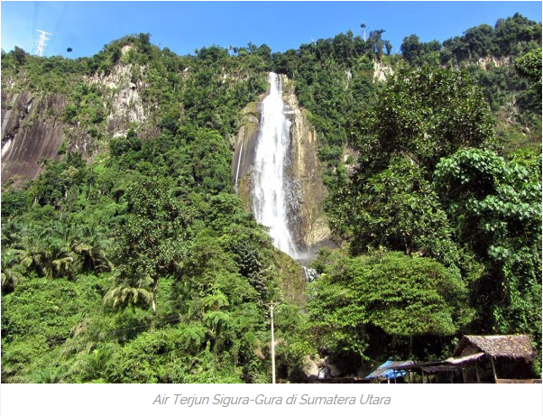
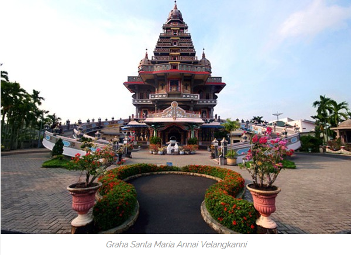

E2O
Terdiri dari :
- (12.111.2457) ELiezer Sitepu
- (13.111.1031) Eben Almaranata Sinaga
- (13.111.1084) Oksiton Mesa Krista Purba
- Tempat Wisata di Sumatera Utara
- - Merupakan Danau vulkanis terbesar dan terluas di dunia
- - Di tengah danau ini terdapat pulau samosir, dan merupakan daya tarik danau toba
- - Panorama alam Danau Toba adalah satu yang paling memikat
- - Berlokasi di parapat, Sumatera Utara
Air Terjun Dwi Warna Sibolangit

- - Berada didalam kawasan hutan Sibolangit
- - Daya tarik air nya yaitu perpaduan antara biru (air dingin) dan putih (air hangat)
- - Memakan waktu perjalanan selama 2 jam dari kota medan ke sibolangit, 3 jam berjalan kaki untuk sampai ke Dwi warna
- - Berlokasi di Durin Sirugun, Kec. Sibolangit, Kab. Deli Serdang, Sumatera Utara
Maha Vihara Adhi Maitreya

- - Merupakan sebuah tempat peribadatan agama Buddha
- - Berdiri di atas lahan seluas 4.5 hektar
- - Memiliki suasana yang asri, tertata rapi, dan terjaga kebersihannya
- - Berlokasi di Jl. Cemara Boulevard Utara No. 8 Komplek Cemara Asri (Desa Sampali, Percut Sei Tuan), Medan, Sumatera Utara
- - Berketinggian sekitar 1000 meter dpl
- - Memiliki keindahan alam yang masih natural
- - Merupakan salah satu tempat terbaik untuk mempelajari sejarah dan riwayat suku Batak
- - Tuktuk adalah sebuah daerah yang berada di pulau Samosir
- - Berlokasi di Kabupaten Samosir, Sumatera Utara
- - Merupakan peninggalan Kerajaan Deli
- - Secara arsitektural, bangunan Istana Maimun didominasi warna kuning yang merupakan warna khas Melayu
- - Untuk dapat masuk ke Istana Maimu ini, Anda harus membayar tiket masuk sebesar Rp 8 ribu per orang
- - Berlokasi di Jl. Brigadir Jendral Katamso, Medan, Sumatera Utara
- - Memiliki reputasi dunia dengan pesona lompat batu dan kegiatan selancar
- - Terletak di Samudera Hindia pada arah barat Pulau Sumatera
- - Gunung Sitoli merupakan kota yang menjadi salah satu sentral kepariwisataan di sana
- - Terdapat Museum Pusaka Nias dengan 6.500 koleksi benda budaya peninggalan Masyarakat Nias
Taman Wisata Iman Salib Kasih

- - Sebuah monumen berbentuk salib
- - Monumen untuk mengenang jasa, dedikasi, dan pengabdian yang luar biasa dari Dr. Ingwer Ludwig Nommensen
- - Nommensen merupakan missionaris asal Marsch Nordstrand, Jerman Utara yang mengajarkan agama Kristen di Tanah Batak
- - Berlokasi di Bukit Siatas Barita, Kec. Siatas Barita, Tarutung, Sumatera Utara
- - Tarutung adalah ibukota Kab. Tapanuli Utara
- - Tarutung terkenal sebagai pusat wisata religi di Sumatera Utara
- - Sijaba Huta Ginjang, sebuah taman wisata alam di Sumatera Utara yang menghadap ke arah Danau Toba
- - Terdapat pemandian air soda yang hanya ada dua di dunia selain Venezuela, yaitu Aek Rara Tarutung
- - Gunung Sibayak merupakan gunung api yang masih aktif
- - Gunung sibayak disebut juga Gunung Raja
- - Pesona wisata gunung ini terletak pada panorama alam yang begitu indah
- - Memakan waktu perjalanan selama 2 jam dari kota Medan
- - Membayar tiket masuk Gunung Sibayak sebesar Rp 4 ribu per orang
Air Terjun Sipiso-Piso

- - Daya tarik air terjun Sipiso-Piso Tongging terletak pada ketinggian air terjunnya mencapai 120 meter dan terletak dekat sekali dengan Gunung Sipiso-Piso
- - Untuk dapat berada di bagian bawah air terjun ini harus menuruni 1000 anak tangga yang berlika-liku
- - Berlokasi di Desa Tongging, Kabupaten Karo, Sumatera Utara
- - Wisata dengan kegiatan penjelajahan hutan serta menyaksikan dari dekat kehidupan satwa di alam bebas
- - Bukit Lawang adalah sebuah perwujudan hutan tropis yang dekat dengan pintu masuk Taman Nasional Gunung Leuser
- - Menempuh perjalanan selama 3 jam dari Kota Medan
- - Berlokasi di Kecamatan Bohorok, Kabupaten Langkat, Sumatera Utara
Air Terjun Sigura-Gura

- - Air terjun tertinggi di Indonesia
- - Berketinggian 250 meter dan berada di bentang alam dekat dengan Danau Toba
- - Udara dingin dan sejuk adalah karakter tempat wisata ini
- - Berlokasi di Kabupaten Toba Samosir, Sumatera Utara
Graha Santa Maria Annai Velangkanni

- - Salah satu destinasi wisata di rohani di Medan
- - Sebuah gereja umat Katholik yang sangat unik mirip sebuah kuil Hindu
- - Nama Annai Velangkani berarti Bunda dari Velangkanni
- - Berlokasi di Jl. Sakura III No. 7-10 Tanjung Selamat, Kec. Medan Tuntungan, Medan, Sumatera Utara
- - Taman Alam Lumbini terletak di kaki Gunung Sibayak
- - Memiliki keunikan berupa adanya sebuah pagoda yang merupakan pagoda tertinggi di Indonesia
- - Pagoda ini adalah replika Pagoda Shwedago yang ada di Myanmar
- - Terdapat lebih dari 2500 patung Buddha dan relief lainnya di kawsan wisata ini
- - Berlokasi di Desa Tongkoh, Kec. Dolat Rakyat, Berastagi, Kabupaten Karo, Sumatera Utara